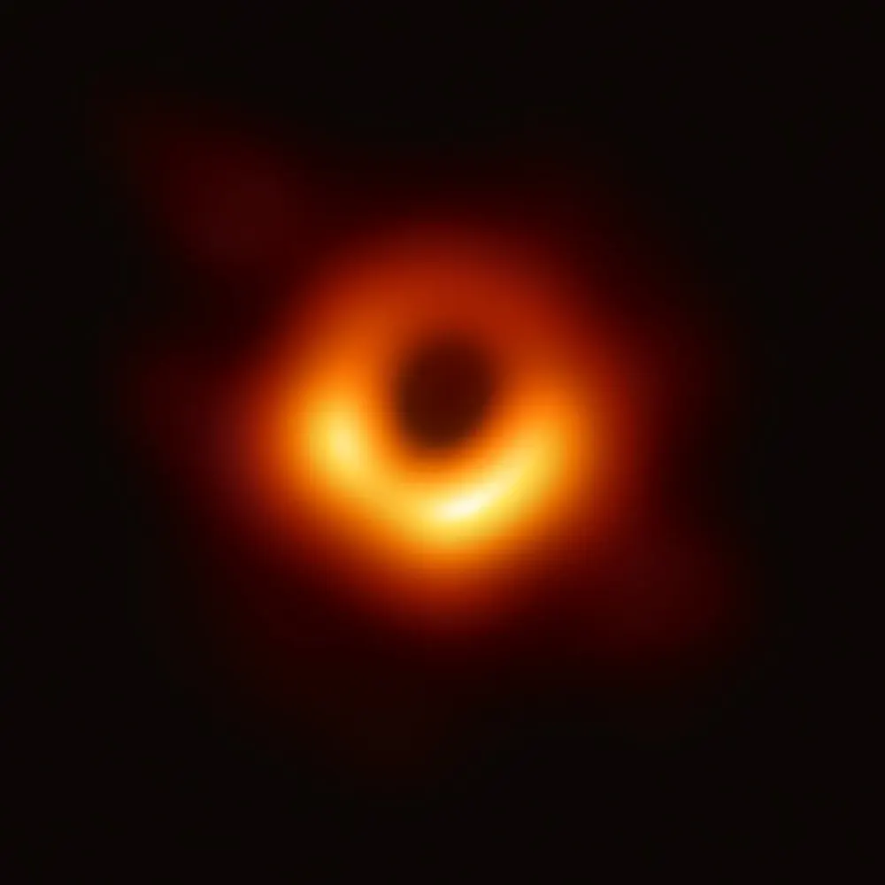

← Black holesब्लैक होलAgujeros negrosBuracos negrosTrous noirsالثقوب السوداء
Event horizon and singularityEvent horizon और singularityHorizonte de sucesos y singularidadHorizonte de eventos e singularidadeHorizon des événements et singularitéأفق الحدث والمفردة
How big a black hole is, what its edge really is, and what may sit at the centre.ब्लैक होल कितना बड़ा है, उसका किनारा असल में क्या है, और केंद्र में क्या हो सकता है।

📷 EHT Collaboration · CC BY 4.0
How big is the edge?किनारा कितना बड़ा है?¿Qué tamaño tiene el borde?Qual o tamanho da borda?Quelle est la taille du bord ?ما حجم الحافة؟
The size of the event horizon grows in a simple way with mass: about 3 km for every Sun of mass. Physicists write it r = 2GM/c², the Schwarzschild radius. The table shows what size each object would have if it were squeezed into a black hole.Event horizon का आकार द्रव्यमान के साथ सीधे बढ़ता है: हर एक सूरज के द्रव्यमान पर लगभग 3 km। भौतिकविद इसे r = 2GM/c² लिखते हैं, जिसे Schwarzschild radius कहते हैं। नीचे की table बताती है कि हर चीज़ को दबाकर ब्लैक होल बनाया जाए तो उसकी त्रिज्या कितनी होगी।
| Objectचीज़ObjetoObjetoObjetالجسم | Massद्रव्यमानMasaMassaMasseالكتلة | Horizon radiusHorizon की त्रिज्याRadio del horizonteRaio do horizonteRayon de l’horizonنصف قطر الأفق |
|---|---|---|
| Earthपृथ्वीTierraTerraTerreالأرض | 1 Earth mass1 पृथ्वी द्रव्यमान1 masa terrestre1 massa terrestre1 masse terrestreكتلة أرضية واحدة | 8.9 mm8.9 mm8,9 mm8,9 mm8,9 mm8.9 مم |
| Jupiterबृहस्पतिJúpiterJúpiterJupiterالمشتري | 318 Earths318 पृथ्वी318 Tierras318 Terras318 Terres318 أرضًا | 2.8 m2.8 m2,8 m2,8 m2,8 m |
| The SunसूरजEl SolO SolLe Soleilالشمس | 1 Sun1 सूरज1 Sol1 Sol1 Soleilشمس واحدة | 3 km3 km3 كم |
| A 10-Sun black hole10 सूरज का ब्लैक होलUn agujero negro de 10 SolesUm buraco negro de 10 SóisUn trou noir de 10 Soleilsثقب أسود بكتلة 10 شموس | 10 Suns10 सूरज10 Soles10 Sóis10 Soleils10 شموس | 29.5 km29.5 km29,5 km29,5 km29,5 km29.5 كم |
| Sagittarius A*Sagittarius A*Sagitario A*Sagitário A*Sagittarius A*الرامي أ* | 4.3 million Suns43 लाख सूरज4,3 millones de Soles4,3 milhões de Sóis4,3 millions de Soleils4.3 مليون شمس | 12.7 million km12.7 मिलियन km12,7 millones de km12,7 milhões de km12,7 millions de km12.7 مليون كم |
| M87*M87*M87*M87*M87*M87* | 6.5 billion Suns6.5 अरब सूरज6.500 millones de Soles6,5 bilhões de Sóis6,5 milliards de Soleils6.5 مليار شمس | 128 AU128 AU128 UA128 UA128 UA128 وحدة فلكية |
Worked out from r = 2GM/c². 1 AU is the distance from Earth to the Sun. The whole of Earth squeezed into a black hole would be about the size of a marble.r = 2GM/c² से निकाला गया। 1 AU पृथ्वी से सूरज की दूरी है। पूरी पृथ्वी को दबाकर ब्लैक होल बनाएँ तो वह लगभग एक कंचे जितना होगा।
The horizon of Sagittarius A* would fit inside the orbit of Mercury. The horizon of M87* is about four times wider than the orbit of Neptune.Sagittarius A* का horizon बुध की कक्षा के अंदर समा जाएगा। M87* का horizon वरुण (Neptune) की कक्षा से लगभग चार गुना चौड़ा है।
Light can circle itरोशनी इसका चक्कर लगा सकती हैLa luz puede orbitarloA luz pode orbitá-loLa lumière peut en faire le tourيمكن للضوء أن يدور حوله
Gravity bends light so strongly that, at 1.5 times the horizon radius, light can travel in a circle around the black hole. This is why pictures from the Event Horizon Telescope show a bright ring around a dark centre. The dark “shadow” is about 2.6 times wider than the horizon itself.Gravity रोशनी को इतना मोड़ती है कि horizon की त्रिज्या से 1.5 गुना दूरी पर रोशनी ब्लैक होल के चारों ओर गोल चक्कर लगा सकती है। इसीलिए Event Horizon Telescope की तस्वीरों में गहरे केंद्र के चारों ओर चमकदार छल्ला दिखता है। गहरी “परछाईं” horizon से लगभग 2.6 गुना चौड़ी है।
The singularitySingularityLa singularidadA singularidadeLa singularitéالمفردة
At the centre, Einstein’s theory of gravity (general relativity) says all the mass is squeezed into a single point of infinite density. Most physicists read that as a sign that the theory breaks down there. A full theory of quantum gravity is needed, and we do not have one yet. Nobody knows what is really at the centre.केंद्र में Einstein का gravity का सिद्धांत (general relativity) कहता है कि सारा द्रव्यमान अनंत घनत्व वाले एक बिंदु में दबा है। ज़्यादातर भौतिकविद इसे इस बात का संकेत मानते हैं कि वहाँ सिद्धांत टूट जाता है। पूरी quantum gravity की theory चाहिए, जो अभी हमारे पास नहीं है। केंद्र में असल में क्या है, यह कोई नहीं जानता।